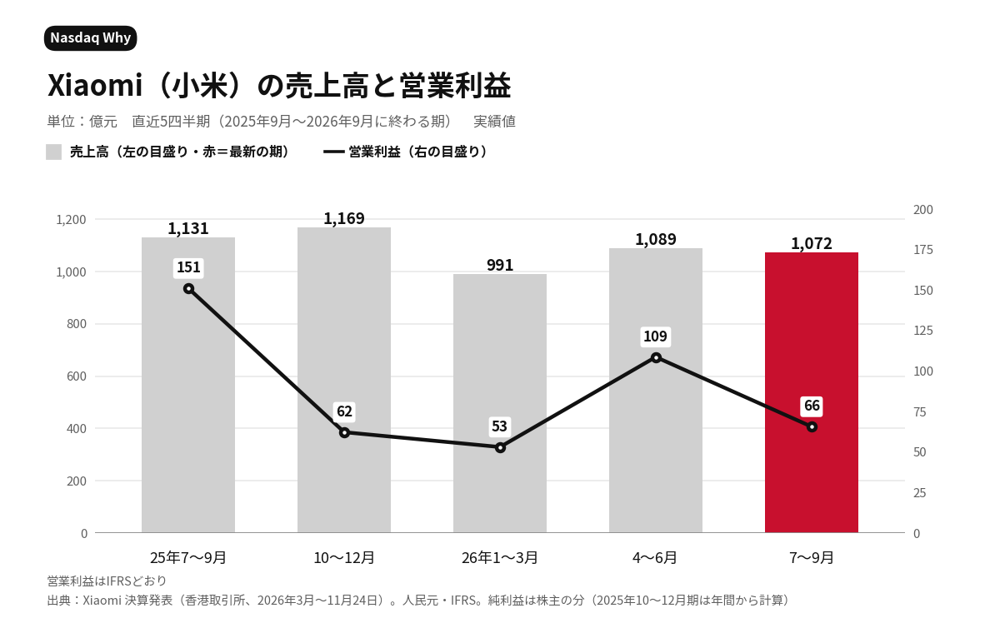
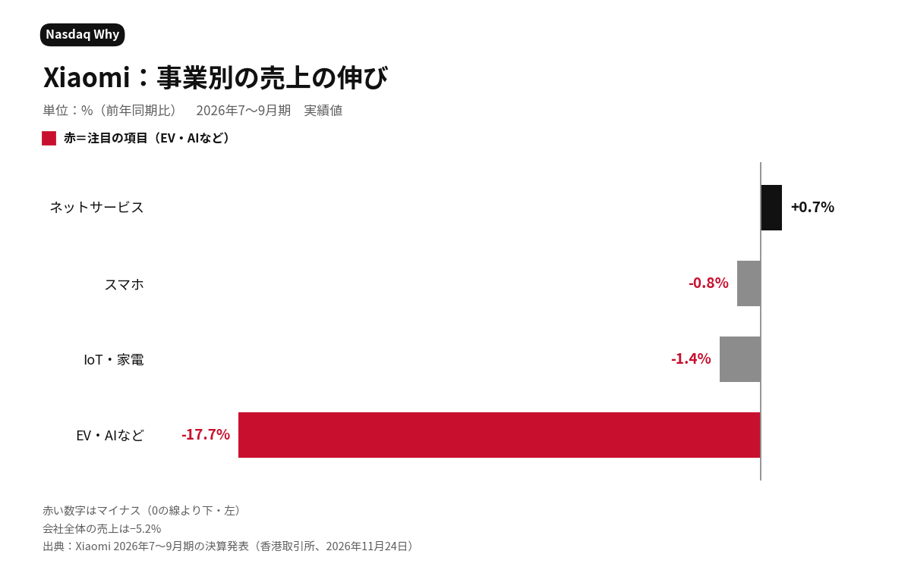
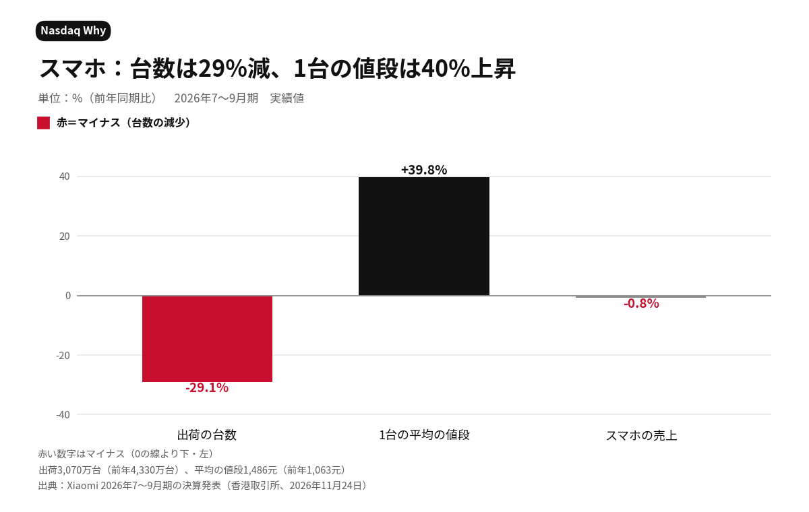
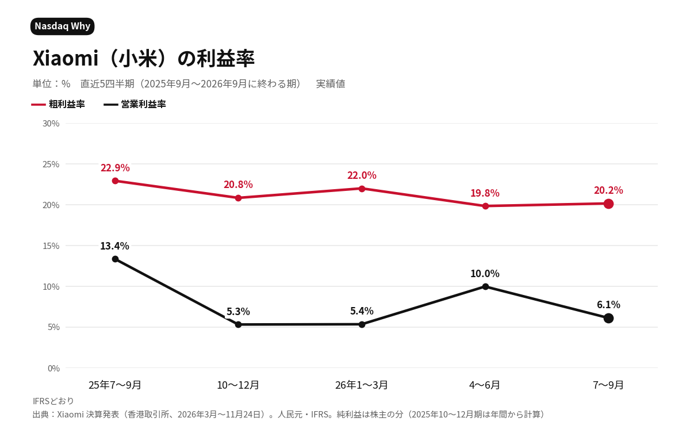
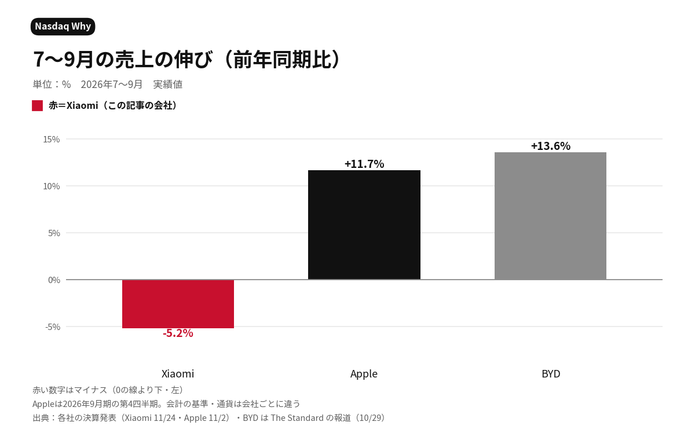

1810｜2026年7〜9月期の決算｜決算発表 2026年11月24日（香港の取引終了後）
Xiaomi（小米）の決算：スマホの台数は3割減なのに、なぜ1台の値段は4割上がった？
世界のスマホで3位のXiaomi（小米）の7〜9月期は、売上が前年同期比5.2%減の1,072億元と、3四半期続けて減った。営業利益（IFRSどおり）は56.5%減の65.7億元、純利益（株主の分）は68.4%減の38.8億元。スマホの出荷は3,070万台（−29.1%）と大きく減ったが、メモリーの値上がりで安いスマホの出荷が大きく減り、1台の平均の値段は1,486元（+39.8%）と過去最高になった。世界のスマホのシェアは12.1%で、25四半期続けて3位以内（Omdia。1位Samsung、2位Apple）。EV（電気自動車）の納車は10万975台（−7.2%）だった。

売上は1,131億元（2025年7〜9月）から、1,169億元、991億元、1,089億元、1,072億元と動いた。営業利益（IFRSどおり）は151億元から66億元に減った。7〜9月期の調整後の純利益（会社が重視する数字）は48.8億元で、4〜6月期の62.2億元から減った。
主な数字（2026年7〜9月期）
| 今回 | 前年同期 | 前年比 | |
|---|---|---|---|
| 売上高 | 1,072億元 | 1,131億元 | -5.2% |
| 営業利益 | 66億元 | 151億元 | -56.5% |
| 営業利益率 | 6.1% | 13.4% | |
| 純利益 | 39億元 | 123億元 | -68.4% |
7〜9月期の事業別の売上
| 事業 | 売上 | 前年同期比 |
|---|---|---|
| スマホ | 456億元 | -0.8% |
| IoT・家電 | 272億元 | -1.4% |
| ネットサービス | 95億元 | +0.7% |
| EV・AIなど | 239億元 | -17.7% |
| うちEV | 227億元 | -19.9% |
事業別に見ると：EVなどの部門が大きく減った
スマホ（−0.8%）・IoTと家電（−1.4%）・ネットサービス（+0.7%）はほぼ横ばい。大きく減ったのはEV・AIなどの部門（−17.7%）で、EVの納車の減少（−7.2%）と、1台あたりの売上の低下が重なった。
広告の売上は74億元（+2.6%）。ネットサービスの粗利益率は73.8%と高く、利益を支えている。

スマホの台数と値段
出荷の台数は4,330万台から3,070万台に減ったが、1台の平均の値段は1,063元から1,486元に上がった。そのため、スマホの売上は456億元と、ほぼ前年並みだった。
中国のスマホのシェアは16.7%から14.8%に下がった。世界のシェアは13.6%から12.1%（Omdia）。

会社の見通し
| 数字の見通し | 出していない |
|---|---|
| メモリーの値段 | 来年も上がる見込み |
| 来年のEVの台数 | まだ出していない |
| ドイツで車 | 2027年後半から |
- 会社は、売上や利益の数字の見通しを出していない。
- 盧偉冰（Lu Weibing）社長は、メモリー（DRAM）の値段は「2027年も上がる可能性がとても高い」とし、2027年前半まで高い状態が続くと見ている。
- 来年のEVの納車の目標は「まだ発表していない」（林世偉（Alain Lam）CFO）。2027年後半にはドイツで車を売り始める計画（Reuters）。
利益率の流れ：部品代の値上がりが重い
粗利益率は2025年7〜9月の22.9%から、20%前後に下がった。メモリーなどの部品代の値上がりが続いているため。
盧偉冰社長は、メモリー（DRAM）の値段は2027年も上がる可能性がとても高いと見ており、利益率の回復には時間がかかりそうだ。

もうけの力
スマホ・EVの大手と比べると
期間：どの会社も2026年7〜9月。利益率は純利益率（純利益÷売上）。各社の決算発表と報道から。
| 会社 | 売上高 | 前年比 | 利益率 |
|---|---|---|---|
| Xiaomi | 1,072億元 | −5.2% | 3.6% |
| Apple | 1,145億ドル | +11.7% | 27% |
| BYD | 2,215億元 | +13.6% | 約4.5% |
事業の中身が大きく違う。Xiaomi（小米）はスマホ・家電・ネットサービス・EV（電気自動車）。Apple（アップル）はiPhoneとサービスが中心（7〜9月は会社の数え方では2026年9月期の第4四半期、iPhoneの売上は+17.5%）。BYD（比亜迪）はEVと電池が中心で、純利益は報道の約100億元から計算。XiaomiとBYDは人民元、Appleは米ドル。会計の基準も違う（XiaomiはIFRS、BYDは中国の基準、Appleは米国の基準）。
同じ期間の売上の伸びを比べると
同じ7〜9月で、Apple（+11.7%）とBYD（+13.6%）は売上が伸び、Xiaomiは−5.2%だった。Appleは高い機種が中心で、部品代の値上がりの影響が比べて小さいとみられる。
Xiaomiは安い〜中くらいの値段のスマホが多く、部品代の値上がりの影響を受けやすいとみられる。

決算説明会で会社が話したこと
【メモリー】盧偉冰（Lu Weibing）社長は「2027年のDRAMの値上がりは、まだその可能性がとても高い」と話した。NAND（データを保存するメモリー）はほぼ横ばいの見込み。
【値段】「やみくもに値上げはできない」とし、店で売る値段の上げ幅は、メモリーの値上がりよりかなり小さくなると説明した。
【EV】林世偉（Alain Lam）CFOは、来年の納車の目標は「まだ発表していない」と話した。2027年後半にはドイツで車を売り始める計画（Reuters）。
【AI】研究開発費は92億元（+2.0%）で、そのうち3割以上がAI。
出典：決算説明会の書き起こし（stockanalysis.com）・Reuters・The Next Web の報道。発言は英語からの要約。
NasdaqWhy の視点：データから読み取れる注目点
決算資料と各社の公式データを並べて読み取れることです。将来を予想するものではありません。
- 【なぜ台数が減り、1台の値段が上がったか】AIのデータセンター向けにメモリーの需要が増え、スマホに使うメモリーの値段が大きく上がった。安いスマホほど部品代の値上がりが重くのしかかる。出荷の減少は安い機種が中心とみられ、出荷は3,070万台（−29.1%）、平均の値段は1,486元（+39.8%）。その結果、スマホの売上は456億元（−0.8%）とほぼ横ばいだった。世界のスマホの市場全体も、出荷が22%減った（IDC）。
- 【なぜ利益が半分以下になったか】メモリーなどの部品代が上がり、全体の粗利益率は22.9%から20.2%に下がった。スマホの粗利益率は11.1%から9.2%に。さらに、EV・AIなどの部門は売上が−17.7%の239億元に減り、営業損益は34億元の赤字だった（会社は主にAIへの投資のためと説明）。
- 【なぜEVの売上が減ったか】EVの納車は10万975台（−7.2%）で、EVの売上は約227億元（−19.9%）。中国の乗用車の販売全体が落ち込んでいる（小売りは−24%、Reuters）。会社は決算説明会で、中国の自動車業界は「どこも大きな圧力を受けている」と話した。一方、雷軍（Lei Jun）氏によると、10月の納車は5万台を超えて2026年で最高だった。
- 【お金の流れ】営業キャッシュフローは230億元の流出（マイナス）。現金と運用資産は1,969億元で、6月末の2,193億元から減った。1月〜11月19日に約131億香港ドルの自社株買いをした。
- 【同業と比べると】同じ7〜9月で、Appleの売上は+11.7%（iPhoneは+17.5%）、BYDは+13.6%と伸びた一方、Xiaomiは−5.2%。世界のスマホの順位は、Samsung（22.6%）・Apple（22.4%）・Xiaomi（12.0%）の順（IDC）。高い機種が中心のAppleは、部品代の値上がりの影響が比べて小さいとみられる。
- 【決算説明会から】盧偉冰社長は、メモリーの値上がりに対して「やみくもに値上げはできない」とし、店で売る値段の上げ幅は、メモリーの値上がりより「かなり小さくなる」と話した。林世偉CFOは、車のメモリーも「値段はまだ高い」と説明した。
- 【比べるときの注意】会社は7〜9月期から、EVなどの部門の名前を「NEV（新エネルギー車）・AI・その他の新しい事業」に変えた。調整後の純利益（会社が重視する数字）は48.8億元（−56.8%）で、市場の予想（LSEG 集計で約52億元）を下回った（Reuters）。
次に確認したい決算・予定
- メモリーの値段の流れ：Micron（マイクロン）の決算（12月中旬の見込み）。
- Xiaomiの10〜12月のEVの納車と、ドイツへの進出の準備。
- Xiaomiの次の決算（2027年3月ごろの見込み）：スマホの台数が戻るか、EV・AIの部門の赤字が縮むか。
関連リンク
出典：Xiaomi 2026年7〜9月期の決算発表と決算説明資料（2026年11月24日、香港取引所・ir.mi.com）・4〜6月期・1〜3月期・2025年の決算発表・決算説明会（stockanalysis.com の書き起こし）・Reuters・The Next Web の報道。スマホのシェアは Omdia（会社の資料）・IDC・Counterpoint。同業はApple（11/2）・BYD（10/29、The Standard の報道）
📝 note でも読めます（図つき・まとめ）：note.com/nasdaqwhy